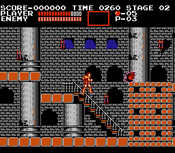

Speedrunning Castlevania
Now, Castlevania is regarded as one of the hardest titles on the NES alone but when you throw speedrunning into the mix the difficulty is elevated to a whole new level. The average playthrough of this game is supposed to take the player hours to beat especially with how hard the game is, but, in 2004 a player by the name of Tom Votva (known for speedrunning all sorts of rare and challenging NES games) posted the first Castlevania speedrun that boasted the time of 14 minutes and 25 seconds. You must be wondering, how is that even possible? Well, Tom was able to break the game down level by level and used some intuitive tricks to get to the end in record time.
Since Tom's original speedrun the game has amassed a huge audience that was able to collectively reduce the time by minutes. Since that first run of the game, countless tricks and maneuvers have been discovered by analyzing the technical aspects of the game and manipulating them for the player's benefit. These discoveries are shared amongst the community to give runners new ways to improve their time. Some of these techniques are: boosting your character by taking damage from an enemy, using technical glitches, selective use of power-ups, critical hits of damage, level routing and planning, and manipulating the frame the player is on.
Damage Boost in Action
Player Ranking vs Speedrun Time
Above is a graph that features the top 80 players ranked on the Offical Castlevania Leaderboard as of the beginning of this month. You can zoom in and pan around with your mouse on the graph to get a better look at specific areas as well as hover over each dot to see the runner's name, ranking, and time. This graph helps to demonstrate how intense speedrunning can be by looking at how neck and neck each time is. Runners are only seconds off from each other sometimes tieing at the same spot. Speedrunning is a cutthroat challenge and the tiniest mistake made in a run can ruin all hope at getting a better time.
How do They Play the Game?
There are a lot of options when it comes to playing the game itself. The speedrunning community has a list of allowed emulators for each game and console, however, a lot of people may opt for playing an official release. A vast majority of players hold the opinion that if you aren't playing on the original console with an original copy of the game then it shouldn't count, however, getting your hands on an NES and copy of the game is extremely challenging therefore certain emulators can be allowed. The following data comes from the Offical Castlevania Leaderboard which features what platform the game was run on for each record.
Based on this data we can see that almost collectively everybody plays on the NES. However, the second chart shows us that when it comes to emulation it is almost a perfect split with only a fraction more on the side of the original console. This means that at the end of the day all player's runs will be official and not called into question because of the platform they used.